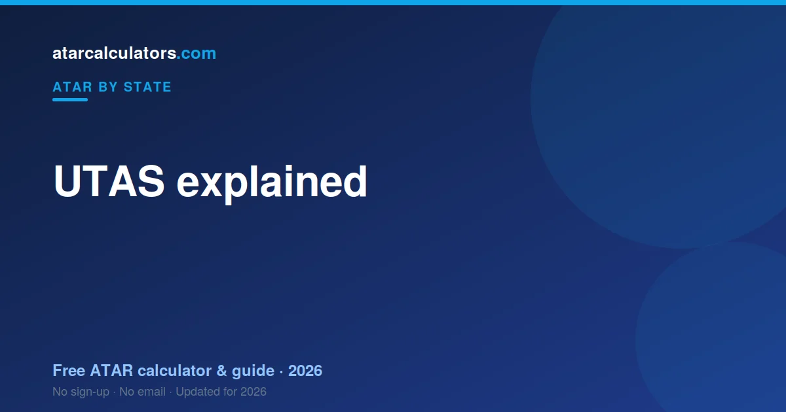

UTAS is the University of Tasmania, the state’s university, and it manages admissions for Tasmanian students, since Tasmania has no separate tertiary admissions centre. Your ATAR is built from your best pre-tertiary Level 3 and 4 subject scores, scaled and combined into a Tertiary Entrance rank. TASC sets and assesses the TCE courses; UTAS turns those results into an ATAR and a university place.
Key takeaways
- UTAS is the University of Tasmania, the state’s university.
- Tasmania has no separate admissions centre — UTAS fills that role.
- Your ATAR comes from your best pre-tertiary Level 3 and 4 scores.
- Those scaled scores form a Tertiary Entrance rank.
- TASC sets and assesses the TCE courses.
- A Tasmanian ATAR is directly comparable to any other state’s.

What is UTAS?
UTAS stands for the University of Tasmania. It is the state’s university, and because Tasmania does not run a separate tertiary admissions centre, UTAS also plays the role that a body like UAC or VTAC plays in other states.
So in Tasmania, the university and the admissions process are closely linked. When Tasmanian students ask how they get their ATAR and their university place, UTAS is central to both answers.
This is a genuine difference from the mainland, where a separate admissions centre sits between students and the universities. In Tasmania, UTAS is that point of contact.
What does UTAS do?
UTAS manages university admissions for Tasmanian students. It handles applications, sets entry requirements for its courses, and makes offers. It also uses your ATAR, alongside other pathways, to decide entry.
Because it is the state’s main university, UTAS is where most Tasmanian school leavers apply. Rather than applying through a separate centre and then to universities, Tasmanian students deal largely with UTAS directly.
So UTAS is both the destination and, in effect, the gateway. Understanding how it works helps you see how your TCE results become a university place.
UTAS vs TASC
Students often confuse UTAS with TASC, but they do different things. TASC, the Office of Tasmanian Assessment, Standards and Certification, sets the senior secondary courses, oversees their assessment, and awards the TCE.
UTAS comes at the university end. It uses the results TASC produces to work out entry, through your ATAR and other pathways, and it manages your application and offer. In short: TASC runs the courses and assessment; UTAS handles university entry.
So the two bodies are a relay. TASC assesses your subjects, and UTAS turns those results into a university place. They are separate organisations with separate roles.
How your ATAR is worked out
Your ATAR in Tasmania is built from your best pre-tertiary subjects, the Level 3 and Level 4 courses designed to count towards university entrance. Each is scaled so that a score in one subject is comparable to a score in another.
Scaling reflects how strong the students taking a subject are across all their subjects, not how hard the subject feels. A subject scales up when its cohort is strong, and down when it is broad. See how scaling works.
Your scaled pre-tertiary scores are then combined into a rank. So it is your scaled results in your best pre-tertiary subjects, not your raw marks, that drive your ATAR.
The Tertiary Entrance rank
Tasmania combines your best five pre-tertiary subject scores into a Tertiary Entrance rank, which is expressed as an ATAR. So your strongest five Level 3 and 4 subjects carry your result.
Because only your best five count, attempting more pre-tertiary subjects does not penalise you. The rank uses the combination that works most in your favour, which gives you room to try more subjects without risk.
The higher your combined scaled score across those best five, the higher your ATAR, since the ATAR is that combined score expressed as a rank.
Is a Tasmanian ATAR comparable?
Yes. Although Tasmania calculates entrance through UTAS using TCE results, the ATAR itself is national. An ATAR of 85 from Tasmania means the same as an ATAR of 85 from any other state: you finished ahead of about 85 percent of the relevant age group.
So a Tasmanian ATAR is directly comparable to an interstate one, and it is recognised by universities across Australia. If you plan to study on the mainland, your Tasmanian ATAR travels with you and is assessed the same way as a local one.
Applying to UTAS
Tasmanian students generally apply to UTAS directly. You list the courses you want, and UTAS assesses your application against its entry requirements, using your ATAR and any other pathways you qualify for.
Because UTAS is the state’s university, this is a more direct process than the multi-preference systems on the mainland. Still, it is worth applying for the courses you genuinely want and understanding each one’s requirements.
UTAS also considers applicants from interstate and offers a range of courses, so its admissions process is not limited to Tasmanian school leavers.
Pathways and other entry
UTAS offers more than one way in. Beyond ATAR-based entry, it runs programs that recognise school recommendations, and enabling or foundation courses that provide a pathway for students who do not enter directly on their ATAR.
So your ATAR is one route, not the only one. If your ATAR does not meet a course requirement, a pathway program can still lead you to the degree you want. It is worth asking UTAS about the options for your situation.
Interstate and other students
UTAS also admits students from interstate and overseas. An ATAR earned in another state is recognised, since the ATAR is national, so mainland students can apply to UTAS on the same basis.
If you studied elsewhere and want to study in Tasmania, UTAS is the body you apply to. Your existing ATAR or qualification is assessed against its entry requirements.
When results are released
TCE results and ATARs for Tasmanian students are released in December, with the exact date confirmed closer to the time. University offers from UTAS follow, with main offers around the start of the new year.
So results and offers are separate moments: your results and ATAR in December, then your offer soon after. See the TAS ATAR release date guide for what to expect on the day.
Estimate your TAS ATAR
You do not have to wait for your results to get a sense of your ATAR. Our TCE ATAR calculator applies scaling to your pre-tertiary scores and estimates your ATAR, so you can plan ahead.
It is a useful way to see how your best five scaled subjects come together, and to test how different results would change your rank. For the full method, see how ATAR is calculated in Tasmania.
Guaranteed entry and school recommendations
Because UTAS is the state’s university and manages its own admissions, it offers entry schemes beyond a raw ATAR cutoff. These can include guaranteed entry to certain courses at set ATARs, and programs that recognise a school’s recommendation of a student.
So getting into UTAS is not only about clearing a single number. If you are aiming for a UTAS course, it is worth checking whether a guaranteed-entry threshold or a school-recommendation program applies, since these can give you a clearer, earlier sense of your place.
Common questions
What is UTAS?
UTAS is the University of Tasmania, the state’s university. Because Tasmania has no separate tertiary admissions centre, UTAS also manages admissions for Tasmanian students, playing the role a body like UAC or VTAC plays elsewhere.
What does UTAS do?
UTAS manages university admissions for Tasmanian students: it handles applications, sets entry requirements, uses your ATAR and other pathways to decide entry, and makes offers. It is both the state’s main university and, in effect, the admissions gateway.
How does UTAS work out my ATAR?
Your ATAR is built from your best five pre-tertiary Level 3 and 4 subject scores, each scaled and combined into a Tertiary Entrance rank, which is expressed as an ATAR up to 99.95. UTAS then uses that ATAR for entry.
Is UTAS the same as TASC?
No. TASC sets the senior secondary courses, oversees assessment and awards the TCE. UTAS comes at the university end, using those results to decide entry and manage applications. They are separate bodies with separate roles.